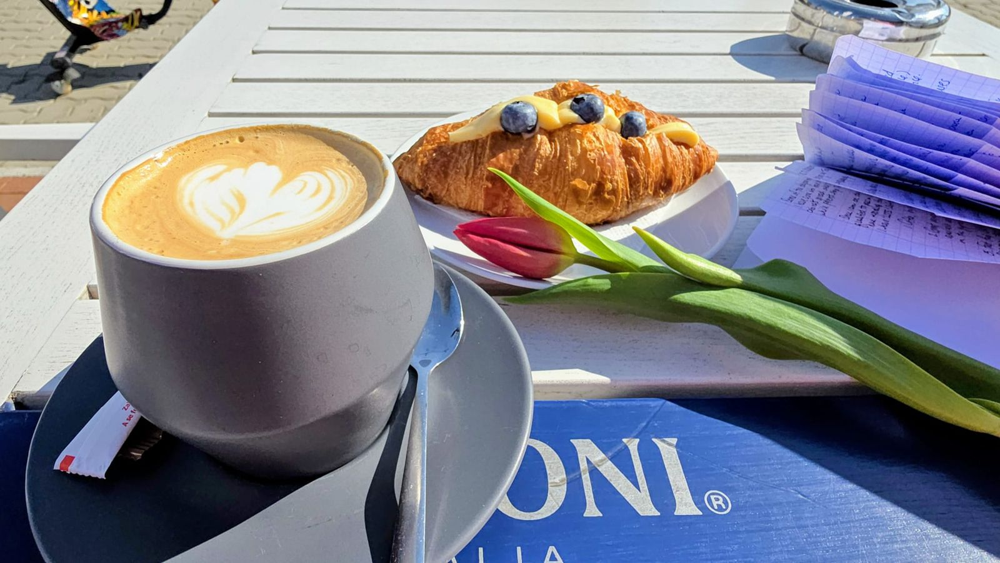

Journey 01 · Timișoara Note 11 of 11 Field Note
Women’s Day
Flowers, flowers everywhere!

A few days after I noticed the Mărțișor pins appearing everywhere, something else started happening around the city.
Flowers.
Not just white snowdrops (Romanian: ghiocel), the cherished flower symbolizing the arrival of spring, but small purple crocuses, yellow dandelions, and pink buds on trees promising a riot of color soon. All small wildflowers, growing in the parks I walk through every day or along the sidewalks.
Then it was just one small stall with buckets of tulips set up near a shop. Then another appeared outside the grocery store. Then another near the bus stop. Within a day or two it seemed like every corner had someone selling flowers.
Men were standing around the stalls studying the bouquets like they were making very serious decisions. Giggling girls picked out their favorites in hopes that the boys were paying attention. Children had colorful paper flowers made of paper, excitedly bringing them home to present to mom or grandma.
Some people bought large, elaborate arrangements. Others chose a single flower wrapped in paper. For days, I watched flowers appear everywhere. Sitting at a cafe, writing in my journal, I was surprised with a gift myself, a single tulip presented alongside my coffee.
It turns out that this is how Romania celebrates March 8th – International Women’s Day.
Unlike my American experiences, in Romania, this day isn’t something that mostly exists online or in corporate events. It’s something you see happening out in the world. Flowers are given to mothers, wives, daughters, teachers, coworkers, friends. Schools celebrate it. Offices celebrate it. The entire city seemed to be quietly participating in the same small ritual.
What I noticed was that this wasn’t anything overtly official, there were no big splashy advertisements, no push for diamond encrusted tulips to forever bloom. It just felt… normal. It felt real in a way that wasn’t polished and packaged, in the way a market stall can feel more personal than a chain store in the mall.
A man buying flowers on his way home. A student carrying a bouquet down the sidewalk. Someone stepping onto a bus with tulips tucked under their arm.
It made me think again about the older man I had watched in the square earlier that week, carefully choosing a Mărțișor charm and pinning it to his partner’s coat.

March here seems full of small gestures like that. Red and white strings pinned to jackets. Tiny charms exchanged between friends. Flowers carried through the streets. Little signs that winter is loosening its grip and spring is starting to arrive, one small kindness at a time.
Originally published at fieldnotesfromabroad.com/2026/03/14/field-notes-womens-day/